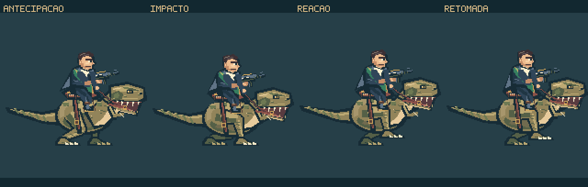
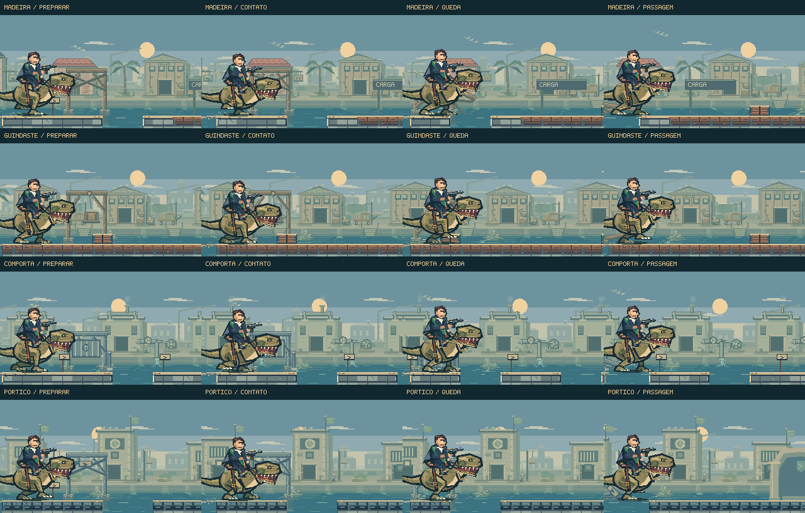

Ele abre caminho
pela força.
O dinossauro prepara o corpo, atinge a estrutura e continua avançando. O cavaleiro absorve o choque; os apoios cedem, a carga perde o cabo e as peças caem com o impulso da passagem.
Jogar a perseguição →Ver a animação ↓
Preparar. Atingir. Atravessar.
13 segundos de composição dirigida, com animações e renderizadores nativos. Posições, rupturas e poses de disparo foram preparadas para o estudo; o vídeo não tem áudio e não registra uma partida. Os novos sons estão integrados ao jogo.
O movimento de preparação acompanha a distância até o contato. Depois do golpe, o peso passa pelo tronco e chega com atraso ao cavaleiro e à cauda. Durante as rajadas, os pés mantêm a passada da corrida.
Cada estrutura cede de um jeito.

Escoras se desprendem, vigas recebem impulso e a carga se solta depois do cabo. As peças giram, fazem contato com a margem e se acomodam. Lascas e ferragens continuam no local.
O painel pesado cai antes do conjunto superior. A tubulação rompida lança água que alcança o canal e forma pequenas ondas. No pórtico, a placa perde as amarras e cai como uma peça rígida.
Impacto com leitura durante a corrida.
Um pequeno recuo do enquadramento conserva o contato em vista. Estalos de madeira, choque de metal, cabo e passos usam momentos próprios; o tremor do impacto é curto. Feka continua correndo durante a sequência.
A opção de movimento reduzido desativa o ajuste de enquadramento e diminui os efeitos secundários. As estruturas continuam mostrando a ruptura e a queda.